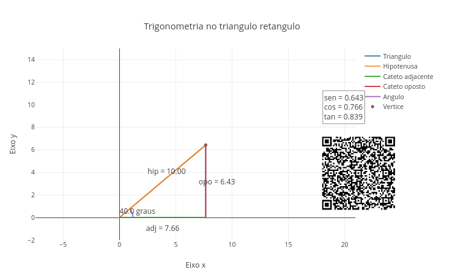
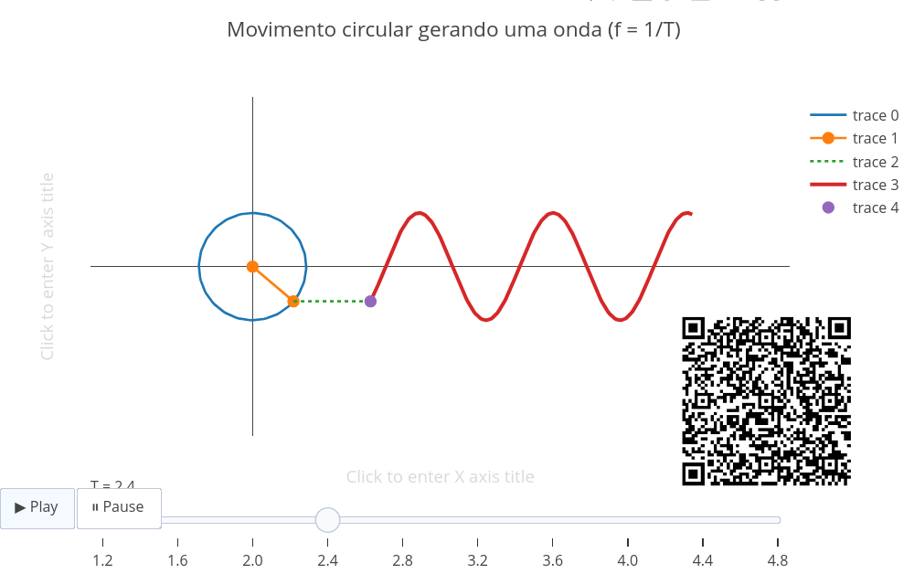
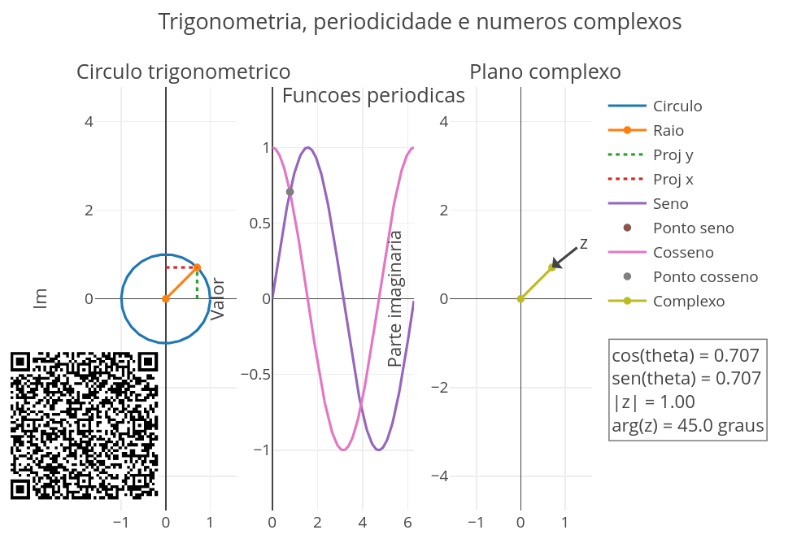

5 Trigonometria, periodicidade e números complexos
As ondas sonoras, o movimento das rodas, a corrente alternada, as vibrações mecânicas, o movimento das marés, as estações do ano, o batimento cardíaco, além de inúmeros outros sinais periódicos, aparecem em diferentes contextos das Ciência e da Tecnologia. A trigonometria permite descrever esses fenômenos por meio de razões geométricas, funções periódicas e representações no plano, temas deste capítulo.
Depois de explorar, você consegue:
- reconhecer seno, cosseno e tangente como relações geométricas em triângulos retângulos;
- interpretar seno e cosseno como coordenadas no círculo trigonométrico;
- relacionar ângulo, rotação e repetição em representações gráficas;
- compreender a periodicidade em fenômenos matemáticos e físicos;
- estabelecer a conexão entre trigonometria e números complexos no plano;
- integrar diferentes representações de uma mesma ideia matemática por meio de modelos interativos.
Você pode iniciar os temas desse capítulo com calma, apenas observando e editando o código que aparece no JSPlotly da Figura 5.2, e que trata das relações em triângulos.

O script mostra como 3 funções básicas, seno, cosseno e tangente, aparecem diretamente em um triângulo retângulo. A ideia é simples: ao escolher um ângulo e uma hipotenusa, essa o maior lado de um triângulo retângulo, o modelo calcula automaticamente os outros dois lados, denominados por cateto adjacente (próximo ao ângulo), e cateto oposto, bem como as razões trigonométricas correspondentes.
Agite antes de usar
Comece alterando dois valores no início do código, e apenas observe o que acontece na área gráfica do app:
const ang_deg = 40;
const hip = 10;O valor ang_deg representa o ângulo, em graus. Para evitar triângulos muito achatados ou quase verticais, experimente valores entre 5 e 85. O valor hip define o tamanho da hipotenusa. Depois de modificar os valores, clique em add e observe como o triângulo muda.
Quando o ângulo aumenta, o cateto oposto cresce e o cateto adjacente diminui. Assim fica “fácil” perceber que o seno está associado ao cateto oposto, enquanto o cosseno ao cateto adjacente.
No código, isso aparece aqui:
const adj = hip * Math.cos(ang);
const opo = hip * Math.sin(ang);
const tanv = Math.tan(ang);Ou seja, o triângulo é construído a partir das próprias relações trigonométricas. Você pode explorar alguns cenários para sedimentar esse aprendizado. E também pode optar por limpar a tela (clean) antes de cada experiência. Ou não limpá-la, e nesse caso permitindo a comparação entre triângulos com valores diferentes no aplicativo.
- Ângulo de 30 graus. Experimente editar o código como segue, e observe que o cateto oposto fica menor que o adjacente. E discuta por que o seno de 30\(^\circ\) é menor que o cosseno de 30\(^\circ\).
const ang_deg = 30;
const hip = 10;- Ângulo de 45 graus. Aqui os dois catetos ficam iguais, resultando no chamado
triângulo isósceles, e com propriedades especiais entre seno e cosseno.
const ang_deg = 45;
const hip = 10;- Ângulo de 60 graus. Dessa vez, o cateto oposto fica maior que o adjacente. Compare com o caso de 30\(^\circ\) e observe a inversão entre seno e cosseno.
const ang_deg = 60;
const hip = 10;- Mesma forma, tamanho diferente. Teste os valores abaixo.
const ang_deg = 40;
const hip = 5;Depois teste:
const ang_deg = 40;
const hip = 15;Perceba então que o triângulo aumenta ou diminui, mas os valores de seno, cosseno e tangente permanecem os mesmos. Isso ajuda a mostrar que essas razões dependem do ângulo, e não do tamanho absoluto do triângulo.
- Prevendo valores. Agora que você já percebeu que os valores para seno, cosseno e tangente são obtidos em função dos tamanhos dos lados de um triângulo retângulo e de suas razões, experimente prever alguns resultados para o script da Figura 5.2. Para isso, basta esconder os textos que o gráfico apresenta, veja:
const mostrar_textos = false;ou:
const mostrar_arco = false;“Truquento”, não ?!
Ângulos pequenos. Compare 10, 20 e 30 graus. O que cresce mais rápido: o seno, o cosseno ou a tangente ?
Aproximação de 90 graus. O que acontece com a tangente quando o ângulo se aproxima de 90 graus ? Como isso aparece geometricamente ?
Triângulos semelhantes. Mude a hipotenusa mantendo o ângulo fixo. O que muda e o que permanece ?
Relação entre forma e razão. Compare triângulos diferentes com o mesmo ângulo. Por que seno, cosseno e tangente continuam os mesmos ?
Após testar esses cenários no JSPlotly, você deve perceber algumas relações de triângulos retângulos. Por exemplo, que o cateto adjacente corresponde à projeção horizontal, enquanto que o cateto oposto corresponde à projeção vertical. Que o seno cresce conforme a componente vertical aumenta, enquanto o cosseno diminui conforme a componente horizontal diminui. E que a tangente expressa a razão entre a altura e a base do triângulo.
Ou seja, quando o ângulo muda, as proporções mudam. Quando apenas o tamanho do triângulo muda, as proporções permanecem. Esses mesmos conceitos também aparecem no gráfico de uma função periódica, no ponto que gira sobre uma circunferência, ou na representação de um número complexo.
A trigonometria pode ser compreendida como uma relação entre forma, movimento e representacao. Num triângulo, as razões entre os lados descrevem proporções. Num círculo, elas descrevem coordenadas, enquanto que nos gráficos, tornam-se funções periódicas. E num plano complexo, convertem-se em rotação e orientação.
Para tornar essas ideias mais claras, comece pelo app de JSPlotly que segue e que aborda, de forma realmente animada, o conceito trigonométrico de onda como uma projeção de movimento circular.
Agite antes de usar
Clique em add para executar o script, e em Play para iniciar a animação. Veja que o ponto gira em torno de um círculo no painel. À medida que ele se move, sua altura é projetada para a direita, formando uma curva senoidal e que representa a altura de um ponto que gira.

O slider altera o valor de T, que representa o período do movimento. Valores menores de T geram ciclos mais rápidos (frequência maior), enquanto que valores maiores deixam o movimento mais lento e a onda mais alongada (comprimento de onda). No código, o período inicial está definido aqui:
let T0 = 2.5;E os valores disponíveis no slider são criados neste trecho:
for (let T = 1.2; T <= 5.0; T += 0.4) {
steps.push({
label: T.toFixed(1),
method: "animate",
args: [gerarAnimacao(T)]
});
}Observe primeiro o ponto girando no círculo e depois acompanhe a linha pontilhada horizontal que leva a altura desse ponto até o início da onda. A altura do ponto no círculo é a mesma altura do ponto marcado na onda. Isso mostra que a onda é construída a partir da projeção vertical do movimento circular. A relação trigonométrica aparece nesse trecho do código:
const px = Math.cos(ang);
const py = Math.sin(ang);A coordenada px indica a posição horizontal do ponto no círculo, e a coordenada py indica sua altura. É essa altura, dada pelo seno do ângulo, que aparece na onda. Para “brincar” um pouco com o app, seguem alguns cenários.
- Período curto. Use o slider em um valor baixo, como:
T = 1.2;E veja que a onda fica mais comprimida e que o movimento circular completa ciclos mais rapidamente. Isso aponta para uma maior frequência associada a um menor período.
Período intermediário. Mude T para 2.5. Observe que a animação fica mais equilibrada, permitindo que se observe com clareza a ligação entre o círculo e a onda.
Período longo. Agora use T = 5.0, e perceba que a onda fica mais alongada e o movimento parece mais lento. Ou seja, maior período significa menor frequência e maior comprimento de onda.
Comparando forma e tempo. Mantenha a
amplitudefixa e altere apenas T. Observe que a altura máxima da onda não muda, e sim a distância entre repetições. Isso acontece porque o período e a amplitude são propriedades diferentes. O período controla a repetição, enquanto que a amplitude controla a altura.
Esse script mostra que, quando um ponto gira, sua altura sobe e desce de modo periódico. Essa oscilação vertical acompanhada no espaço forma uma onda. Isso é bem legal, porque agora você pode enxergar o círculo trigonométrico como uma máquina de gerar ciclos.
Em outras palavras, o círculo gera uma rotação que produz um seno, o qual gera uma onda que revela periodicidade.
Essas relações da trigonometria aparecem em inúmeros contextos da vida real. Só para citar alguns: ondas e vibrações, corrente alternada, processamento de sinais, navegação e localização, sonar, animações, computação gráfica, telecomunicações, eletrotécnica, e em quase todo fenômeno periódico, como o batimento cardíaco, ou as marolas que se sucedem à passagem de uma embarcação.
5.1 Números complexos
Uma extensão do conceito acima também ocorre em ramos da Física e Química, como a Eletrônica e estudos de interfaces, e que envolve os assim chamados números complexos.
O valor para se localizar um ponto num eixo cartesiano, aquele que tem um x e um y, pode ser apresentado por duas formas: ou pelas coordenadas x e y, denominadas coordenadas retangulares, ou pela pelas coordenadas polares (trigonometria), e nesse caso, utilizando-se o ângulo que define o ponto junto a origem do gráfico. Essa forma trigonométrica (ou polar) para representar um ponto no espaço plano faz uso dos chamados números complexos.
Números complexos são expressões do tipo \(z = a + bi\), ondea e b são números reais e i é um termo imaginário, e definido por \(i^2 = -1\). Eles estendem os números reais para permitir raízes quadradas de números negativos. O termo a é chamado de parte real, e b de parte imaginária.
A forma trigonométrica (ou polar) de um número complexo \(z = a + bi\) é dada abaixo.
\[ z = \rho(\cos \theta + i \sin \theta) \tag{5.1}\]
Onde \(\rho\) é o módulo \(\rho = \sqrt{a^2 + b^2}\) e \(\theta\) é o argumento (ângulo).
Pode parecer estranho à primeira vista, mas essa representação facilita operações como multiplicação, divisão e potenciação. O eixo cartesiano em que essa representação geométrica tem lugar é também chamado de plano complexo ou plano de Argand. Por vezes, esse plano possui seus eixos denominados por real(x) e imaginário(y) !
Caramba !!! Quanta coisa esquisita. Que tal então um script de JSPlotly para se compreender um pouco melhor o plano de Argand e tornar a vida menos chata ?

Esse script integra as três representações da trigonometria vistas acima: o círculo trigonométrico, as funções periódicas e o plano complexo. A proposta é mostrar que, além de representarem razões em triângulos ou um ponto que gira, seno e cosseno também representam componentes de um número complexo.
Agite antes de usar
Comece alterando o ângulo no início do código. Teste valores clássicos como 30, 45, 90, ou 180\(^\circ\). A cada alteração, clique em add e observe os três painéis: o círculo, o gráfico das funções e o plano complexo.
No primeiro painel, o ponto gira sobre o círculo. Sua coordenada horizontal corresponde ao cosseno, e sua coordenada vertical corresponde ao seno. No segundo painel, o mesmo ângulo aparece como posição em uma curva periódica. O ponto marcado mostra o valor de seno ou cosseno naquele instante angular. Já no terceiro painel, o mesmo ponto é interpretado como um número complexo:
const px = mod * Math.cos(ang);
const py = mod * Math.sin(ang);Assim, o mesmo par (px, py) aparece em duas leituras, uma como ponto do círculo trigonométrico, e outra como número complexo no plano. Isso significa que o número complexo pode ser visto como um vetor que tem módulo mod e argumento ang_deg.
Seguem alguns cenários para você explorar.
- Ângulo de 0 graus
const ang_deg = 0;
const mod = 1;O ponto fica sobre o eixo real positivo. O cosseno vale 1 e o seno vale 0. Esse é um bom ponto de partida para discutir por que o círculo trigonométrico começa no eixo horizontal.
Ângulo de 90 graus. O ponto vai para o eixo imaginário positivo. O cosseno se aproxima de 0 e o seno vale 1. Nesse cenário aparece a ligação entre rotação e coordenadas.
Ângulo de 180 graus. O ponto fica sobre o eixo real negativo. O cosseno vale -1 e o seno volta a 0. Esse cenário é típico do apresentado por alguns
sinaisequadrantes.Aumento do módulo.
const ang_deg = 45;
const mod = 2;O ponto mantém a mesma direção, mas se afasta da origem. Isso mostra que o módulo altera o tamanho do vetor, mas não o ângulo.
- Aumento da frequência
const freq = 2;A curva completa mais oscilações no mesmo intervalo. Esse cenário também auxlia na interpretação já vista para periodicidade, ondas, vibração e fenômenos repetitivos.
- Compare seno e cosseno. Você pode comparar “seno”, “cosseno”, ou “ambos”, bastando alterar esse trecho do código:
const mostrar = "seno";Observe o deslocamento entre as duas curvas para a opção “ambos”. O cosseno começa no valor máximo, enquanto o seno começa em zero. Essa diferença aparece porque são projeções diferentes do mesmo movimento circular.
Se quiser aprender um pouco mais sobre o script, a conversão de graus para radianos acontece aqui:
const ang = ang_deg * Math.PI / 180;Isso é necessário porque as funções trigonométricas em JavaScript usam radianos. Já as funções periódicas são construídas repetindo seno e cosseno ao longo de um intervalo angular:
y_sen.push(amp * Math.sin(freq * x));
y_cos.push(amp * Math.cos(freq * x));A variável amp controla a altura da onda, enquanto freq controla o número de repetições.
Dessa forma, pode-se dizer que seno e o cosseno podem ser entendidos ao mesmo tempo como razões de um triângulo, coordenadas de um ponto, e números complexos. Suas características permitem que sejam adequadas para descrever fenômenos periódicos. E isso é pra lá de legal, pois você percebe agora que uma mesma grandeza angular pode organizar representações geométricas, gráficas e algébricas !
Em suma, percebe que um ponto que gira no círculo gera coordenadas, e essas coordenadas formam seno e cosseno. Quando acompanhadas ao longo do tempo, viram ondas (ciclos), e quando interpretadas como par real-imaginário, viram números complexos (rotação).
Aqui a gente “deita e rola” na abstração verificável (ou não) com os scripts do capítulo. Em relação ao script da Figura 5.2:
- E se o ângulo ficar muito pequeno ?
- E se o ângulo se aproximar de 90\(^\circ\) ?
- E se a hipotenusa dobrar, mas o ângulo continuar igual ?
- E se dobrarmos a frequência ?
- E se a amplitude for reduzida pela metade ?
- E se o ponto girar no sentido horario em vez de anti-horario ?
- E se compararmos ângulos equivalentes, como 30 graus e 390 graus ?
Já para o script da Figura 5.3:
- E se o período for muito pequeno ?
- E se o período for muito grande ?
- E se a velocidade
vaumentar ? - E se a amplitude
Atambém fosse usada para aumentar o raio do círculo ? - E se, em vez da projeção vertical, usássemos a projeção horizontal ?
E para o script da Figura 5.4:
- E se o ângulo passar de 90\(^o\) para 180\(^o\) ?
- E se o módulo aumentar, mas o ângulo continuar igual ?
- E se a frequência dobrar ?
- E se mostrarmos apenas o seno ?
- E se mostrarmos apenas o cosseno ?
- E se compararmos o mesmo ângulo no círculo e no plano complexo ?
- E se o modulo do numero complexo deixar de ser 1 ?
Vimos no capítulo algumas situações em que o emprego da trigonometria é refletido no estudo de relações em triângulos, ondas e plano complexo, e tudo isso com “cadeira vitalícia” nas Ciências e Engenharia. Mas sempre tem lugar para mais uma cadeirinha.
Todos esses conceitos estão também espelhados no funcionamento do relógio analógico e seu movimento angular, nos ciclos naturais das marés, nas ondas sonoras, em rotação de vetores, em fasores da Física, em animações, computação gráfica, modelagem de ciclos naturais, localização espacial, corrente alternada, e em todos os sinais elétricos senoidais.
Em relação a esses últimos, alguns sinais são transformados em ondas quadradas repetitivas, em função de certas restrições instrumentais. Isso é visto “aos montes” na chamada PWM (Pulse Width Modulation), um sinal de saída de microcontroladores, como placas Arduino, ESP32, e Raspberry pi.
Nos scripts desse capitulo, a ideia principal foi converter um ângulo em diferentes representações numéricas e geométricas. Aqui vamos destrinchar um pouquinho mais do script da Figura 5.3, aquele de movimento circular gerando uma onda. O código calcula a frequência a partir do período:
const f = 1 / T;
const omega = 2 * Math.PI * f;
const lambda = v * T;Isso significa que:
Té o tempo de um ciclo completo;fé quantos ciclos ocorrem por unidade de tempo;omegaé a velocidade angular;lambdaé o comprimento de onda.
Quando T diminui, a frequência aumenta. Quando T aumenta, a frequência diminui.
A animação é construída por uma sequência de frames. Em cada frame, o ponto gira um pouco mais e a onda é redesenhada:
const ang = omega * tempo;Esse ângulo muda com o tempo e controla tanto o ponto no círculo quanto a fase da onda. Uma sugestão para pseudocódigo do script é dada abaixo.
INICIAR parâmetros principais
definir amplitude A
definir velocidade v
definir número de pontos da onda
definir quantidade de frames da animação
FUNÇÃO gerarFrame(T, tempo)
calcular frequência:
f = 1 / T
calcular velocidade angular:
omega = 2πf
calcular comprimento de onda:
lambda = vT
calcular ângulo atual:
ang = omega × tempo
calcular posição do ponto no círculo:
px = cos(ang)
py = sen(ang)
gerar pontos do círculo:
PARA vários ângulos th
calcular x = cos(th)
calcular y = sen(th)
FIM
gerar pontos da onda:
PARA vários pontos x
calcular fase:
fase = 2π(x/lambda) + ang
calcular altura da onda:
y = sen(fase)
FIM
retornar:
círculo
ponto girando
onda
parâmetros associados
FIM FUNÇÃO
FUNÇÃO gerarAnimação(T)
criar lista de frames
PARA cada instante de tempo
gerar frame usando gerarFrame(T, tempo)
armazenar frame
FIM
retornar animação completa
FIM FUNÇÃO
gerar animação inicial
criar gráficos:
círculo
raio girando
linha de projeção
onda
ponto da onda
criar slider:
alterar T
recalcular animação
criar botões:
Play
Pause
mostrar resultado final